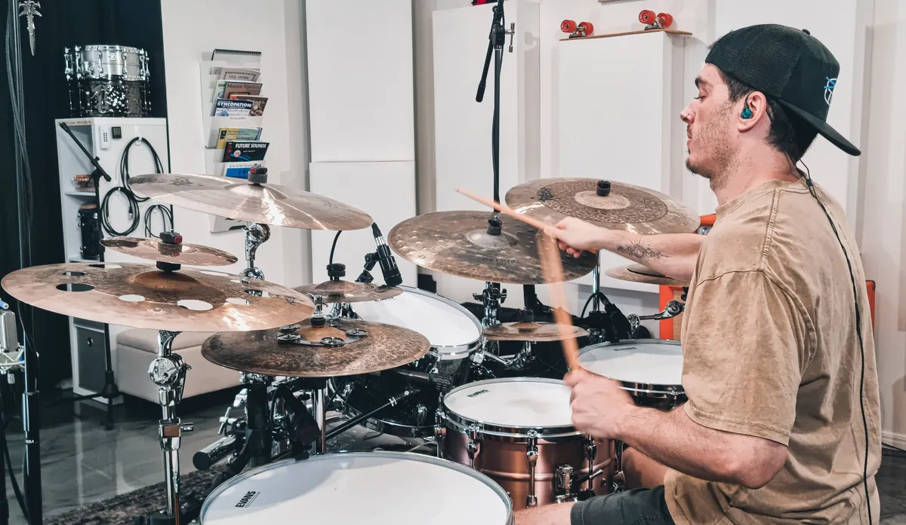

Melbourne, Australia Dave Drums
DAVE
D’AMORE
Drummer / Recording / Education

01 / ABOUT
BEHIND
THE KIT
I'm a Melbourne-based professional drummer with around 30 years of experience, performing everywhere from intimate venues to major festivals and recording studios. My musical roots lie in progressive rock, metal and alternative music, with influences spanning fusion, funk and jazz. I'm drawn to rhythmic complexity, but feel, dynamics and musicality always come first.
01.1 / THE LONGER STORY
More Than
The Drums
Beyond performing, I'm passionate about recording, production and the creative process. I also play and write music on guitar and bass, and have experience in recording and mixing, giving me a broader understanding of how instruments work together within a song. Whether developing drum parts from scratch or bringing an artist's existing ideas to life, I approach every project with the bigger musical picture in mind.
Alongside music, I've spent 15 years coaching strength, mobility and movement, including 12 years running my own gym. That background has given me a deeper understanding of biomechanics, ergonomics and efficient movement, which I bring directly into my approach to drumming. From posture and coordination to technique and injury prevention, I place a strong emphasis on playing efficiently, comfortably and sustainably.
Education has also been a major part of my journey. I spent seven years running my own drum school in Cairns, teaching over 50 students alongside my work as a performing and recording musician. My teaching focuses on developing strong technique, coordination, rhythmic understanding and creativity, while encouraging students to explore their own musical interests and develop an individual voice behind the kit.
02 / EDUCATION
FIND YOUR
RHYTHM
One-on-one drum lessons.
Campbellfield, Melbourne.
Open to ages 10+ and all experience levels, from complete beginners to advanced drummers.
Develop your technique, timing, groove and musicality through lessons tailored to your goals and musical interests.
30 Years playing
7 Years teaching
50+ Students


03 / RECORDING
YOUR MUSIC
MY DRUMS
Melbourne studio. Worldwide reach.
Professional acoustic drum recording for artists, bands and producers. Every performance is shaped around the song, with a focus on feel, dynamics and musicality.
Explore recording04 / GET IN TOUCH
LET’S MAKE
SOME NOISE
Ask about lessons, tell me about a recording, or get in touch about session work. Share a few details and I’ll get back to you.
@drumswithdave on Instagram